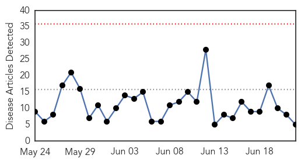
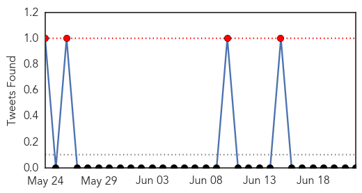
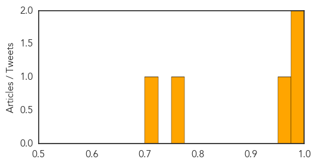
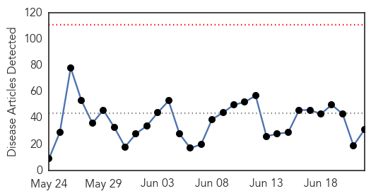

Influenza
30-Day Web Trend
0 alerts, 0 warnings

30-Day Twitter Trend
4 alerts, 0 warnings

Article Locations

Article Confidences
Top Articles:
Top Tweets:
-
No tweets found for Jun 22, 2015
Ebola
30-Day Web Trend
0 alerts, 0 warnings

30-Day Twitter Trend
0 alerts, 0 warnings

Article Locations

Article Confidences

Top Articles:
- 1.000
- Feature: Kenyan doctors help fellow Africans in Ebola-hit West Africa
- 1.000
- The most from the coast
- 1.000
- Feature: Kenyan doctors help fellow Africans in Ebola-hit West Africa
- 1.000
- Health & Wellbeing
- 1.000
- Feature: Kenyan doctors help fellow Africans in Ebola-hit West Africa - Xinhua
- 1.000
- Ebola Doesn’t Disappear at Zero and Neither Will We
- 0.998
- 'Fighting Ebola showed Africans can work well together'
- 0.998
- Modern Healthcare Modern Healthcare business news, research, data and events
- 0.998
- Study of Ebola survivors opens in Liberia
- 0.997
- Gov’t Issues Travel Alert for Sierra Leone and Guinea
- 0.996
- Ebola returns to Sierra Leone capital after three-week gap By Reuters
- 0.996
- Sequencing Ebola’s Secrets
- 0.993
- Guinea, Sierra Leone Still Have Ebola
- 0.989
- North Korea Developes Vaccine To Cure AIDS
- 0.986
- Are Indian Doctors in Nigeria Being Forced to Treat Ebola Patients?
- 0.985
- Did the Ancient Greeks Get Ebola?
- 0.978
- St. Louis-area doctor who helped fight Ebola is finalist for student loan forgiveness
- 0.963
- North Korea Claims It Has Cure for MERS, Ebola and AIDS
- 0.956
- One of Sierra Leone's toughest slums beats Ebola
- 0.939
- MERS Cure Found by North Korea?
- 0.907
- Border Town Chiefs Receive Cell-Phones against Ebola
- 0.861
- Govt plays down MERS impact
- 0.856
- Global Health Means Health At Home Too
- 0.814
- Orchestrated Scientific Collaboration: Critical to the Control of MERS-CoVScientific Collaboration to Control MERS-CoV
- 0.782
- Médecins Sans Frontières Awarded Prize
- 0.732
- The Hot Zone: This Little Fly Can Inflict Some Serious Pain
- 0.727
- MOHS Poised to Provide Clean, Safe and healthy Environment in all Hospitals
- 0.670
- What Does the Future Hold for Tekmira’s Ebola Program?
- 0.605
- FG monitoring MERS spread in Middle East —NCAA boss
- 0.575
- Sierra Leone: IOM Sierra Leone Ebola Response Situation Report Issue 29
- 0.555
- How reliable data can secure a healthy future
Top Tweets:
- 0.864
- RT: Listen to De Capua report on Ebola Update: The Ebola outbreak in West Africa is still not over.... http://t.co/hdazi3Sbp6 Eb…
- 0.807
- Ebola Returns to Sierra Leone Capital After Weeks of No New Cases - TIME http://t.co/SrcxtbhgQ9 ebola EVD
- 0.783
- In a world where 1 case of Ebola is an outbreak Guinea had 20 cases in 5 days @UNICEFGuinea Source: @WHO http://t.co/fZlX1k0wf6
- 0.692
- Debra Wilson nurse who treated Ebola patients speaks at Springfield Central ... - Mas http://t.co/9SsCtNj6Oj ebola EVD
- 0.655
- Did ancient Athens have an Ebola outbreak? - Washington Post http://t.co/0PMAX175dU ebola EVD
- 0.594
- Listen to De Capua report on Ebola Update - Voice of America http://t.co/Iw8KGWPcyy ebola EVD
- 0.582
- Despite Ebola Vigilance and Hope Prevail in Forecariah - Infection Control Today http://t.co/BcuAu6lmDS ebola EVD
- 0.561
- Sierra Leone crossed 13000 cases & Freetown no more free of Ebola! @MackayIM http://t.co/rfwv4ZIUXP
- 0.552
- Ebola: Freetown's Market Traders Feel the Squeeze - World Policy Institute (blog) http://t.co/TT2qqZszco ebola EVD
- 0.542
- Ebola vaccines trial: Lead doctor offers to be used for test - Starr 103.5 FM http://t.co/LGBjuar3bn ebola EVD